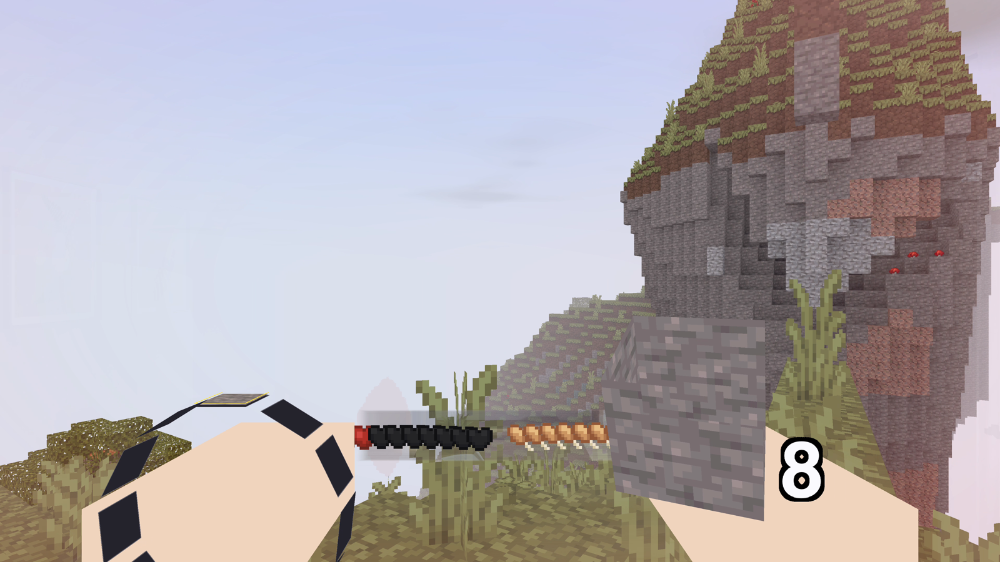
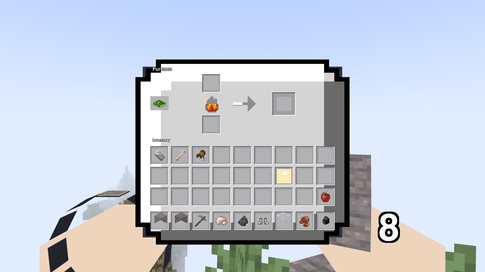
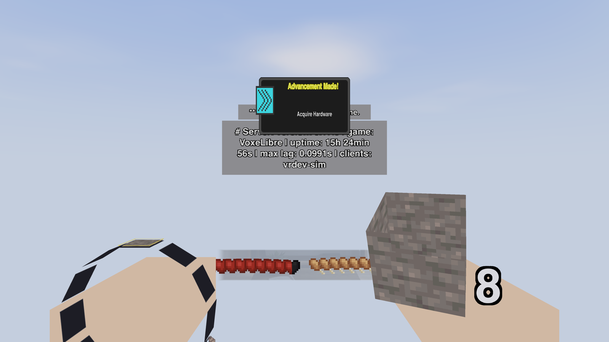
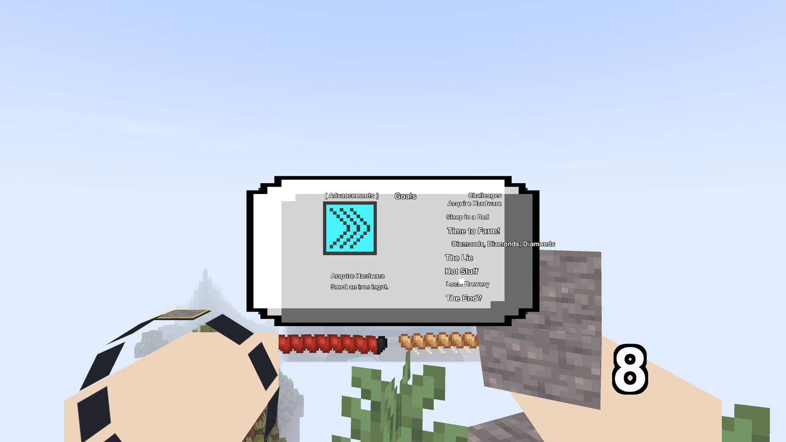

Apple Vision Pro · Swift + Metal · Luanti protocol
I wanted to actually play Luanti on the Vision Pro, not stream a desktop into a floating window. So I wrote a client that renders the world itself, per-eye, in the headset.

A short clip captured in the Vision Pro simulator: the client streaming and meshing a real server world as the view pans across it. You can see the hands, the wrist map, the hotbar, and the pointed-node outline.
Recorded from the simulator, so it's a flat mono view. In the headset it's rendered separately for each eye.
A from-scratch Swift + Metal reimplementation of the Luanti network client. Not the engine ported, not a stream: a new client that talks the same wire protocol.
It speaks the Luanti UDP protocol directly: SRP login, zstd map-block streaming, node and item definitions, media download, entities, formspecs, HUD. An unmodified server sees it as just another client and hands over the whole game. The world is rendered per-eye with Compositor Services, meshed live as blocks stream in, and you walk around, dig, place, and open inventories with the PSVR2 Sense controllers (or a Bluetooth keyboard, with gaze to aim and a pinch to click).
It connects to any Luanti server. I build and test it against VoxeLibre (the Minecraft-ish flagship game), so that's where the polish is, but the protocol layer doesn't care which game you run.
It's a hobby project and a work in progress. Honestly, right now:



All captured in the Vision Pro simulator.
The easiest way in is the TestFlight public beta: open the link on your Vision Pro and install through the TestFlight app. You'll need PlayStation VR2 Sense controllers or a Bluetooth keyboard, and a Luanti server to join; the app doesn't host worlds itself. Feedback goes through TestFlight's own feedback button.
You'll need Xcode and a Luanti server to point it at (a local dev server is fine). Set your own Apple Developer team for a device build.
git clone https://github.com/bettse/voxelnative cd voxelnative/native xcodegen # generate the Xcode project open VoxelNative.xcodeproj # run on Apple Vision Pro or the simulator
Set DEVELOPMENT_TEAM in native/project.yml before running on a device, and enter your server in the launcher.